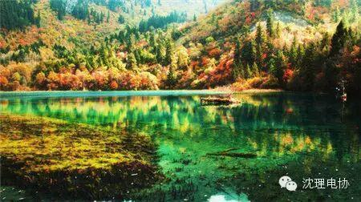
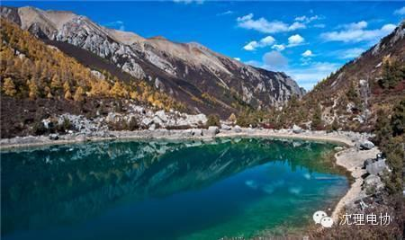
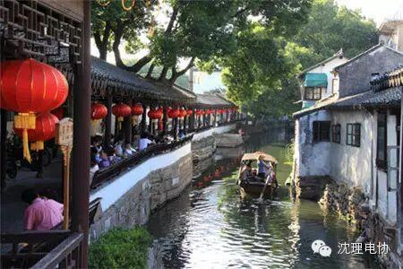
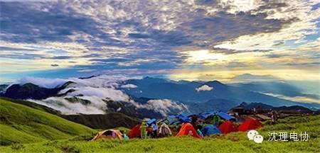
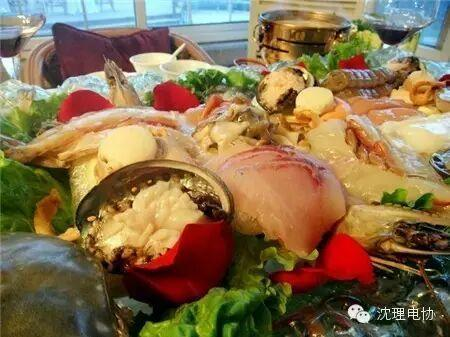
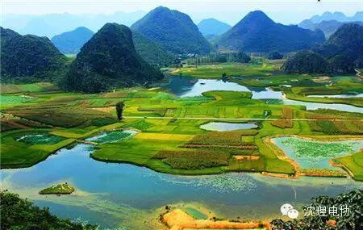

使用小程序
相信大家都无数次的听到这个美得如梦似幻的景点——九寨沟了。5月份是九寨沟的旅游旺季，这时候冰雪消融，山花烂漫，远山的白雪映衬着童话世界，温暖而慵懒的春阳吻接湖面。九寨沟的水，水色黛兰、翠绿，清澈如明镜，斑斓生五彩，一年四季，一日之中都变幻无穷，所以有“九寨归来不看水”之说。心动的小伙伴们可以抓紧机会，去一次九寨沟这个美的让人心动的景点。

2
这是一片不着人工痕迹的地方，不及九寨沟的声名，却独有处女地的神秘，不似雨崩受宠，却一样有翻山越岭的期待……七藏沟，一个比“九寨沟”更美，比“雨崩”还自虐的地方！
“七藏沟”——一个深藏在川北高原的原始高山森林中，名称寡闻于世的地方，方圆百里，没有人烟、没有景区、没有电线、没有硬化路面、没有观光客……
它的美丽和神秘也曾经被津津乐道，但很快便被九寨沟鹊起的名声彻底埋没了。但采药的藏族老人都说，它丝毫不比九寨沟逊色，更为珍贵的是——它是一处静谧唯美的处女地。
七藏沟最大的魅力，在于它的原始和安详。沿路的风景，没有一丝一毫人为开发的痕迹。行走在海拔将近4000米的山沟里，呼吸着最原始的空气，来到豁然开朗的长海子。碧波荡漾的海子，在湛蓝的天空底下尤为壮观。

3
去过了同里、乌镇的人，恐怕都要头痛于她们的人山人海，但是锦溪，却还原了我对江南水乡原本静雅的印象。午后的暖阳洒在江畔时，我们从上海一路驰来，当高楼大厦逐渐被黛瓦粉墙代替，一个“欲遮还羞”的柔谧水乡也慢慢在我们面前除去了面纱。
吴曲悠悠，荡桨船头唱江南。水冢遗韵，流转千年惹人怜。夜色深幽，袅袅茶语话水乡。
荷塘的晚风阵阵吹来，撩拨着柔和的月夜，走在水边，看着水乡的中秋月色，旁边的街巷、河埠、拱桥、长廊、牌坊所蕴现的水乡神韵，宛若一幅流动的绝妙画卷。千古传奇与风流趣闻总是独爱这江南之地，如此钟灵毓秀的地方，也难怪被人们传颂称道，所以锦溪的香冢、禅院、船歌与她的一切幽韵更是像一个让人沉醉其中就不愿醒来的梦，宁愿还原在千年前的动人故事中。

如果你爱一个人就带她去武功山，叫她看看人间仙境，如果你恨一个人，更要带她去武功山，尤其是清明节，在雨中感受体能的透支极限。武功山烟雾迷蒙，充满了神秘和浪漫的气息。从金顶到发云界，全是高山草甸，碧波荡漾，而且延绵不绝，满眼的绿色，像是来到了内蒙古大草原，让人有纵马驰骋的冲动，感觉自己好像进入了天堂；武功山连绵不断的山坡，会把人爬奔溃，而清明时节的大雨纷纷，裹上山上的泥巴，会让人控制不住情绪的想暴躁。
武功山很早以前就在户外爱好者的圈子里小有名气了，它囊括了全世界同一纬度上绝无仅有的高山草原风光，美得惊艳！搭帐篷、看星空、等日出，如果你想来一场不一样的徒步旅行，一定要去武功山，趁着还没完全开发之前。

5
河北，是当之无愧的“北京后花园”，不论是避暑山庄、木兰围场，还是野三坡、月坨岛，无论你想尝试哪一类的度假方式，都可以在这个“近邻”的领地上寻觅到理想的落脚点。五月去河北，最不可动摇的主题当然是尝鲜，这时候是一年中皮皮虾最肥美的季节。只需3个小时即可赶赴秦皇岛。初夏的大海，经过了一个冬天的沉淀，它又露出最纯净的一面。

普者黑位于文山州丘北县，是一个由80个湖泊、喀斯特峰林、溶洞、少数民族村落组成的景区。虽然不如洱海滇池般大气磅礴，但80个迷宫般的海子、200多座 喀斯特小山峰、村舍、农田和草场散发出的小家碧玉气质更让人迷醉。另外，这里还是花腰彝和全国仅存的僰人后裔聚居地，民族风情浓厚。

看完这些有没有心动呢?赶紧准备出发吧！！！